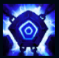
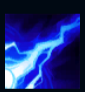
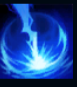
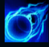
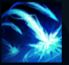

Xerath

| Xerath The Magus Ascendant | |
|---|---|
| Release date | 05.10.2011 |
| Class | Artillery |
| Positions | Middle,Support |
| Resource | Mana |
| Range type | Ranged |
| Adaptive type | Magic |
| Base statistics | |||
| Health | 526 – 2090 | Mana | 459 – 833 |
| Health regen. | 5.5 – 14.85 |
Mana regen. | 8 – 21.6 |
| Armor | 22 – 81.5 | Attack damage | 55 – 106 |
| Magic resist. | 30 – 38.5 | Crit. damage | 175% |
| Move. speed | 340 | Attack range | 525 |
Xerath este un mag iluminat din anticul imperiu al Shurimei, o ființă din energie ocultă care se zbate între bucățile distruse ale unui sarcofag magic. Timp de milenii a fost prins sub nisipurile deșertului, dar renașterea Shurimei l-a eliberat din închisoarea sa antică. Înnebunit de prea multă putere, acum încearcă să cucerească ceea ce crede că este al lui de drept și să înlocuiască noile civilizații ale lumii cu una creată după propriul său chip. |  |
VAL DE MANĂ Atacurile de bază ale lui Xerath refac mană periodic. |
||
|---|---|---|---|---|
 |
ARCANOPULS Lansează o undă de energie cu rază mare de acțiune, care le provoacă daune magice tuturor țintelor lovite. |
|||
 |
OCHIUL DISTRUGERII Invocă o rafală de energie ocultă, care încetinește toți inamicii dintr-o zonă și le provoacă daune magice. Țintele din mijloc suferă daune suplimentare și sunt încetinite mai mult. |
|||
|  |
SFERĂ DE ȘOC Îi provoacă daune magice unui inamic și îl amețește. |
|||
 |
RITUAL EZOTERIC Xerath devine imobil, dar poate lansa numeroase atacuri de la mare distanță. |